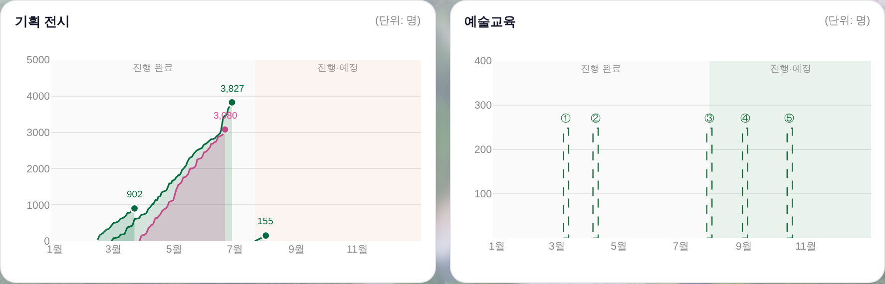

예술교육 — 파선 게이지 → 수강생 실값 막대
260805 운영자 「화요살롱(인문학)을 160개 팔린 걸로 차트에 반영 · 종료된 것으로 · db에도 동일하게(모달 통해서)」.
전후 (화요살롱 · 인문학 · 6월 · 160명 · 종료)
전 — 값 원천이 없어 전 항목 파선 게이지(높이 동일)
후 — ① 화요살롱 160명이 6월 자리에 실막대(100~400 눈금 위)
값이 오는 길 — 새로 만든 게 아니라 공연이 쓰던 축 두 개
| 축 | 소스 | 쓰임 |
|---|
| ① 운영대장 교육 행 | 세부운영관리대장(정리) · 사업구분 교육·특강 · 발권유료 합 | 끝난 교육의 정본(공연과 같은 규칙) |
| ② 판매 축 | 일일입력 → _salesBuild → _bizSalesIdx | 지금 팔고 있는 교육(누계 유료) |
둘 다 없으면 종전대로 파선(수강생 창작 0). _bizClean이 교육을 거르는 건 그게 공연 목록 함수라 옳고, 교육은 _bizEduOpsIdx로 따로 읽습니다. 프로그램 시트엔 없고 운영대장에만 있는 교육도 실립니다(공연 목록의 ∪ 규칙과 같은 축).
⚠ DB 반영은 못 했습니다 — 두 가지 실측
① 이 세션엔 API 비번이 없습니다. Worker 게이트 실측 = GET /api/ops?sheet=프로그램 → {"error":"Unauthorized"}. 공개 엔드포인트(/api/public/jangdo)는 200이라 네트워크는 정상 — 자격만 없습니다.
② 앱 「일일 판매 입력」 모달로도 지금은 못 넣습니다. 그 모달은 (ㄱ) 판매중만 목록에 올리고(종료일 지난 건 제외) (ㄴ) 프로그램 폴백에서 콘텐츠구분==='예술교육'을 명시적으로 제외합니다(index.html 해당 줄). 화요살롱은 6월 종료라 두 조건 모두에 걸립니다.
그래서 선택지는 셋:
㉠ 운영대장에 교육 행 추가(가장 짧음) — 사업구분 교육 · 공연명 화요살롱 · 장르1 인문학 · 티켓구분 유료 · 발권유료 합 160 · 년/월/일. 넣는 즉시 위 ① 축으로 차트에 뜹니다.
㉡ 모달을 열어 주기 — 예술교육·종료 건도 입력되게 모달 조건을 여는 작업(지시 주시면 진행).
㉢ 세션에 API 비번을 주기 — 그러면 Worker API로 제가 직접 넣습니다.
게이트 = check_design ✓(raw hex 1578/1578 · 신규 색 0) · npm run check ✓ · smoke:layout ✓. 축이 400을 넘는 값을 만나면 눈금을 사다리로 넓힙니다(막대가 잘려 작아 보이는 오독 방지).